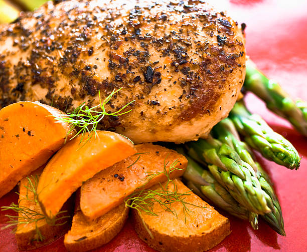

Greek Chicken Asparagus

Description
This dish is known as Greek Chicken Asparagus. It is a salad dish comprised of boneless pieces of chicken. It has some chicken salad with it and asparagus topped with it. It is cooked in Greek Honey Oil. It is usually served with a side of rice or some noodles. This dish has a Greek Sauce commonly used in Greek Salads and Dishes.
This dish is perfect to make on busy weekdays or weeknights. This dish is perfect for children and adults, both. It is healthy too as it does not contain much oil and also contains adequate amounts of protein and vitamins in the chicken and the salad respectively. This is a wonderful dish and is very easy to make too!
Ingredients Required
- 1.5 pounds of boneless chicken
- 0.5 teaspoon of garlic salt
- 1 pound of fresh asparagus, trimmed
- 3 tablespoons of olive oil.
- 2 tablespoons of Greek Seasoning
- 0.25 cup of crumbled feta cheese
- 2 tablespoons of Kalmata olives, pitted and finely chopped
Steps to Make This Recipe
- Step 1:Preheat Oven to 400 Degrees. Line a baking sheet with parchment paper.
- Step 2: Cut Chicken and place in the middle of the sheet pan. Sprinkle with garlic salt. Scatter asparagus around chicken.
- Step 3: Stir together olive oil, lemon juice and Greek seasoning in a small bowl. Combine feta cheese and olives in a second bowl.
- Step 4: Brush half the oil mixture over chicken and drizzle the remainder over the asparagus.
- Step 5:Bake in the preheated oven until chicken easily flakes with a fork, 12 to 15 minutes, depending on thickness of the chicken.
- Step 6: Sprinkle chicken with feta mixture during the last 5 minutes of cooking.